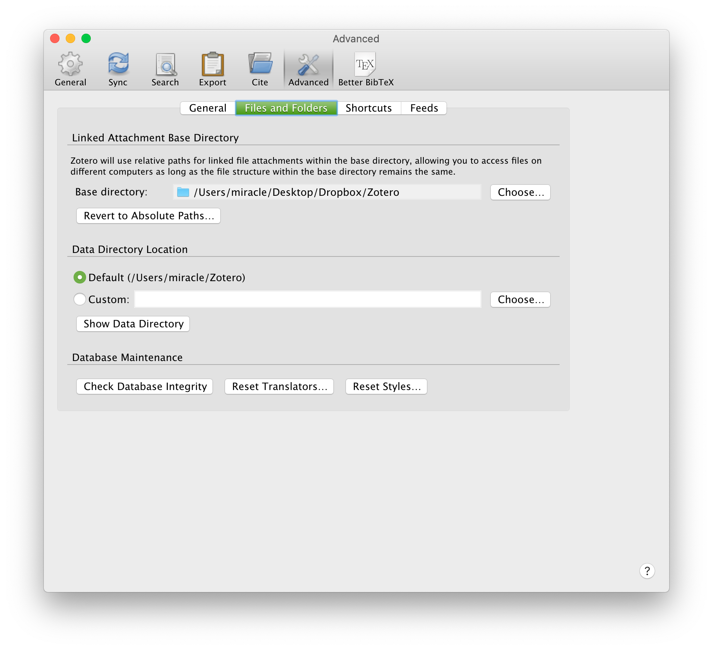
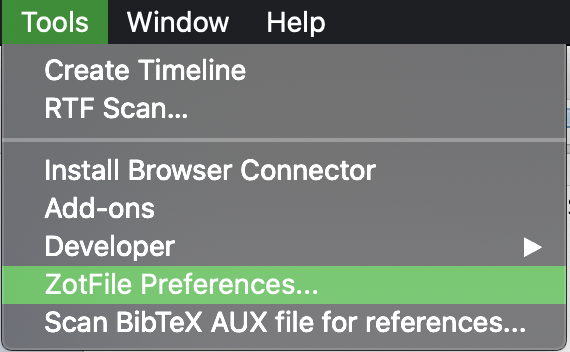
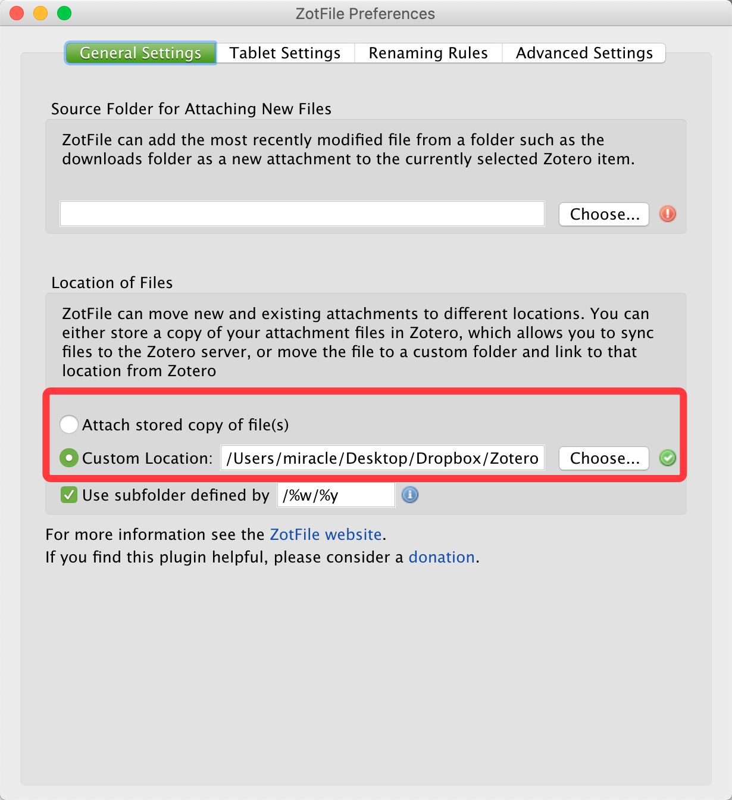
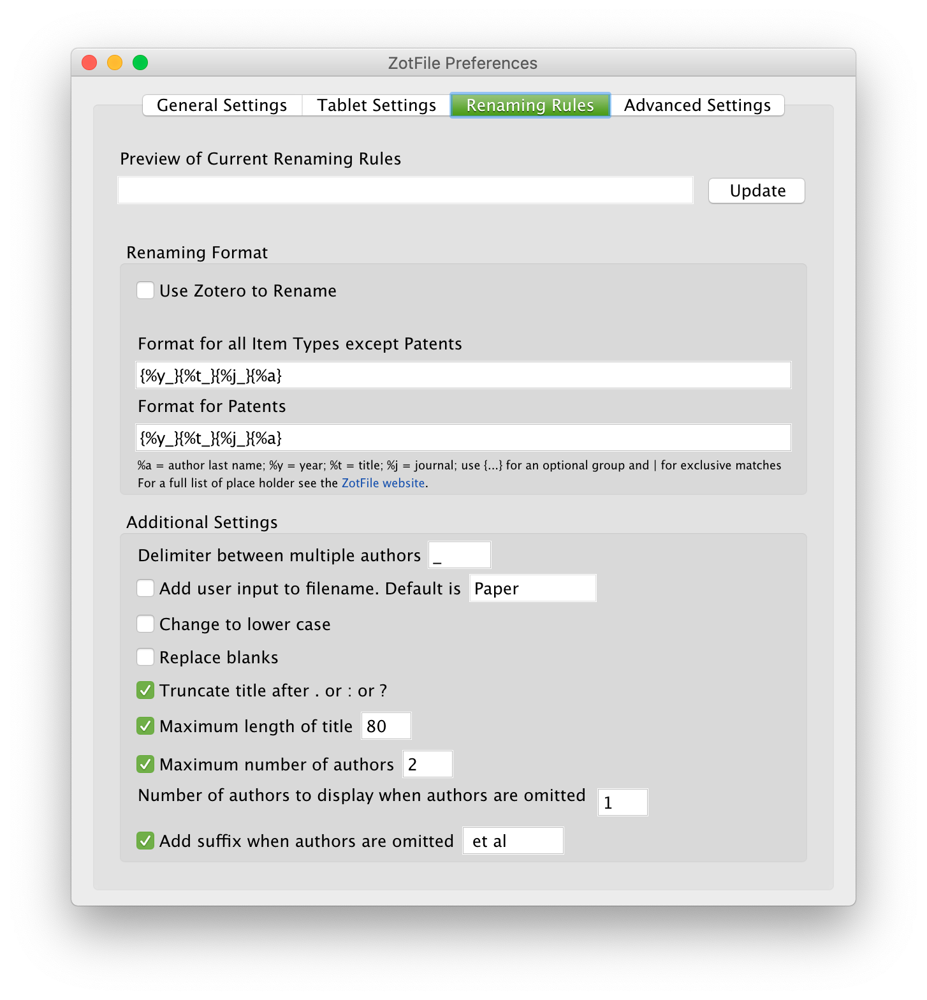
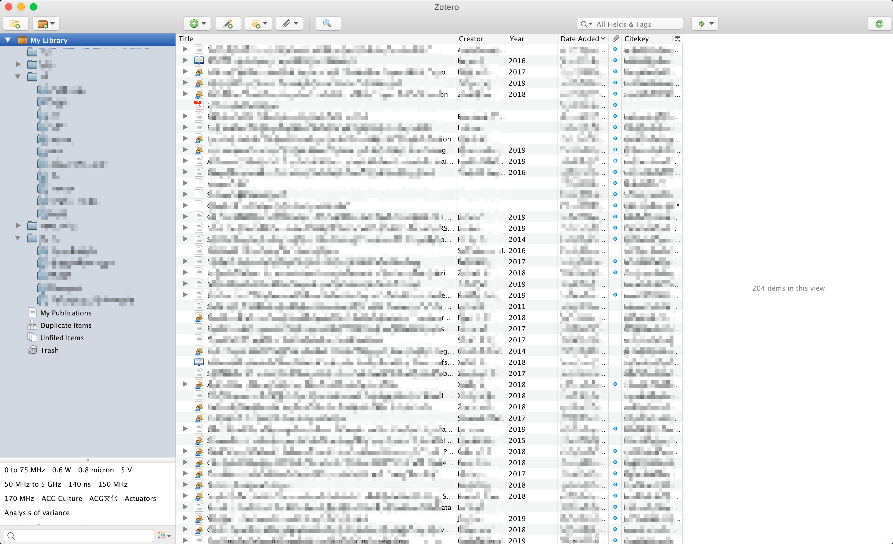
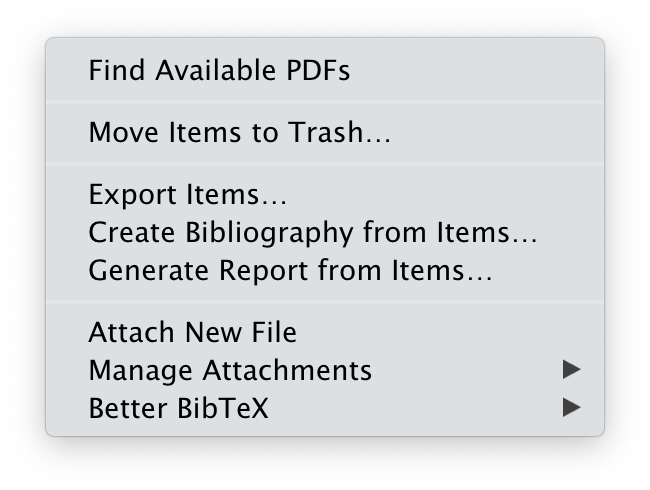
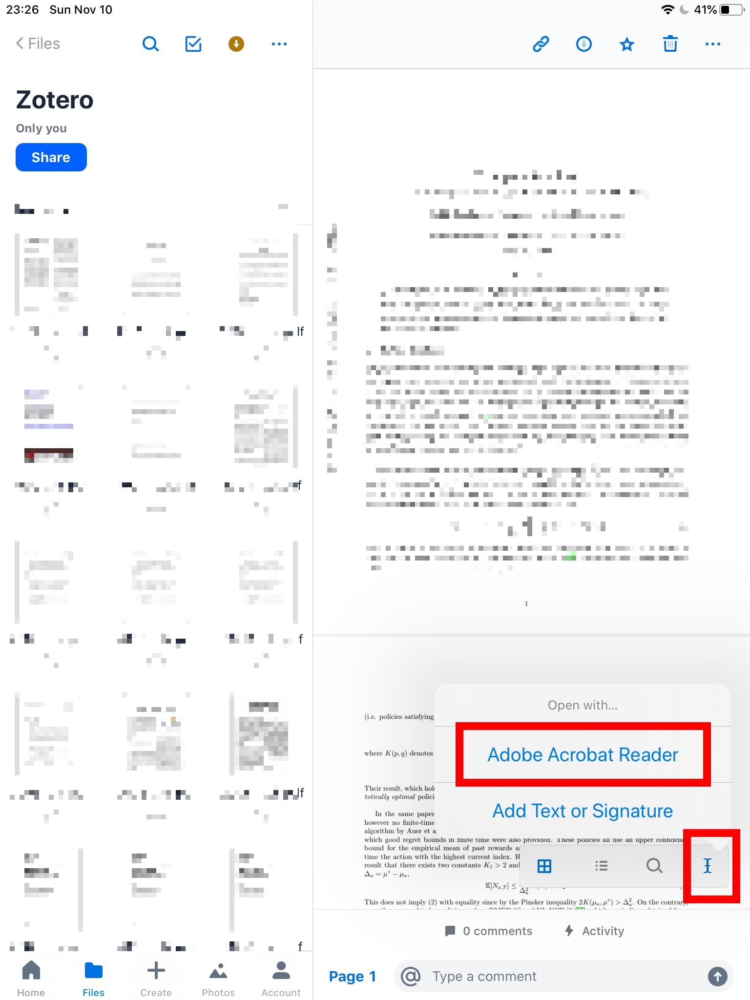

Mac、Windows、iPad三端完美论文管理、阅读与编辑系统配置
管理好自己手中的论文，不让他们被吞噬与“Download”文件夹的茫茫文件海洋中已非易事，而能在需要时迅速定位，能在Windows的Desktop与便携的MacBook上无缝对接论文库则需要相对精细化的管理。然而，很多时候并不适合展开自己的笔记本电脑来“郑重”地阅读一篇论文，在一些相对零碎的时间里随手抽出包中的iPad，读读前面顺手存下的论文，则可大大增加自己的学术幸福感。
需求分析
上面这几点也正是我对论文管理系统的要求。注意这里提到的是“系统”，而并是一个单一的软件。这里提炼一下日常对论文管理及阅读的需求，您可以看看和自己的需求是否吻合：
- 以分层目录的形式将论文进行归档，并且有时需要让同一篇论文同时存放于多个目录中。
- 支持多及目录（多>2）。
- 支持从网页上便捷地储存论文以及文档。
- 支持拖入PDF自动寻找论文信息。
- 需要对论文的PDF原件进行存储，最好能够自动下载缺失的PDF。
- 需要在Mac和Windows端都能访问论文目录，且对PDF文件的修改能够同步。
- PDF的存储最好和数据库系统分离，以便搜索、单独更改或访问。
- 需要对论文进行可自定义格式的自动重命名。
- 界面不能太丑。
- 支持高度自定义或有充足的功能，最好可以使用第三方插件。
- 支持各种引文格式。
- 支持Latex和Word的便捷引用，Word最好有插件。
- 拥有较大的云存储空间，至少足以存储所有的PDF文档。
- 可以从iPad上访问并且可以同步、上传对论文的更改。
- 三个平台PDF阅读器配置最好统一，以免高亮、插入文本等格式不一。
归纳出的这几点便是我对论文管理系统的所有需求了。之后便是对各种论文管理软件的试用和组合。这里直奔主题，给出我现在的全套系统配置及选择的原因。
系统配置
- Mac与Windows端主论文管理软件：Zotero
- 主要插件：zotfile，zotero-better-bibtex
- Mac、Windows与iPad统一PDF同步软件：Dropbox
- Mac、Windows与iPad统一PDF阅读器：Adobe Acrobat
选用原因
Zotero
各大平台上以及Zotero官网对其讲解都很多也很充分了，如果你能够并且愿意花上一些时间来进行自定义配置，它将是一个可以满足几乎所有对论文管理需求的终极软件。我这里只指出一些我认为非常不错的特性。
- 跨平台。Mac，Windows和Linux都有支持。
- 浏览器论文抓取插件很好用。既可直接抓取PDF文章之后解析出论文，也可在如Google Scholar等页面直接批量抓取添加论文索引，并再自动下载相应的PDF。甚至在一些作业性质的小论文中有时需要直接引用某个网页或某个文档，它也可以直接生成条目。
- 支持多级目录。这个多理论上似乎可以无限多下去，非常自由。
- 有很好用的Word插件，使用体验丝滑流畅。
- 拥有在线的庞大引用格式库，基本可以找到所有需要的引文格式。
- 可以加载很多第三方插件，如支持自定义格式重命名的zotfile，针对输出引用进行优化的better-bibtex等。
- 可以将条目的PDF文件储存目录单列出来，存到一个自定义的地方，比如Dropbox文件夹内部。
Dropbox
- 因为现在在美国读书，Dropbox的服务相对来说是快速且稳定的。
- Dropbox的同步功能做的非常好，这也是其在此领域深耕多年的结果。
- 最重要一点，Dropbox在iPad上和Adobe Acrobat有着原生的集成。在Dropbox中使用Acrobat打开并编辑文件，其修改是可以直接同步到Dropbox云端的。这一点对于移动端浏览和编辑论文起到了至关重要的作用。
- 免费版虽然只有2G初始空间，但是可以通过邀请好友注册达到最大的18G。虽然不是特别大，但是对于存储论文已经绰绰有余了。（另这个邀请注册送空间可以直接去淘宝搜索，可以画很少的钱得到很多注册服务，直达18G。）
Adobe Acrobat
- 多平台支持。Mac，Windows，Linux，iOS，Android都有着很好的支持。
- 专业，支持各种编辑方式。常见的高亮、下划线、添加文本、画方框、做批注等自然都是支持的。
- 很多高校都和Adobe公司有着协议，使用学生邮箱可以直接免费使用全套功能。
- 同前面所述，其和Dropbox的关联性支持是整套系统成功的关键。
对比原因
- 之前有在用Mendeley，但是对比Zotero，尤其是对比Zotero和其第三方插件的丰富功能后，前者明显力不从心。另外Windows版本其界面没有针对高分辨率进行适配，并且使用了默认的宋体，显示英文丑陋不堪，且无法更改。在论坛上看到有许多坛友几年前就提出了这些问题，然而显然开发者并没有做出相应。对比Zotero，其论坛环境、活跃程度以及问题解决速度都会更好。
- Endnote是收费软件，我并没有深入使用，这里不多置评，但各位可以容易查到Endnote和Zotero的区别。
- iPad上也考虑过使用PDF Reader – Document Expert作为浏览和编辑软件，但是从Dropbox打开的文件编辑后是以副本的形式存在了本地，并没有被同步，这是无法接受的。
配置细节
Zotero设置部分
- 在所有需要同步的电脑上登录Zotero的账号，如没有，请注册。
- 打开设置，更改
Files and Folders中的Base Directory选项为你的同步盘地址，如Dropbox，OneDrive，坚果云等。请不要动下面的Data Directory Location，这个是Zotero的总体数据库的地址，不建议放到云文件夹下，因为只要有两个端同时使用Zotero这个同步就崩掉了。

- 安装zotfile。更改有关文件的设置。
从Tools栏进入ZotFile Preference

更改PDF文件存储位置。这里是把文件储存到云盘的关键步骤。上面那个更改文件存储地址的作用是指定未来加入的PDF文件的存储地址，而这里是把已经在库的文件移动到这个地址。两个地址相同。

更改重命名相关的设置。这里的%y就是论文发表年份，%j是期刊名，%t是论文标题。而中间的下划线则只是单纯的会在重命名后的文件名中的两个元素之间加一个下滑线罢了，这里可以替换做任意。

在你的所有需要同步的电脑上做完上述步骤后，如果你之前没有Zotero或它是全新的没有条目，那你的设定已经结束。如果库中已有很多论文，想要直接移动到Dropbox相应目录下，那么请执行下一步：
- 移动与重命名已有文件

点击 My Library，全选所有条目，右键选择Manage Attachments->Rename Attachments开始移动和重命名。

iPad设置部分
- 下载Dropbox和Acrobat。
- 打开Dropbox，进入你的论文同步文件夹，任选一篇点击打开
- 右下角找到一个光标键，点击，会提示用Adobe Acrobat Reader打开。
- All set.
